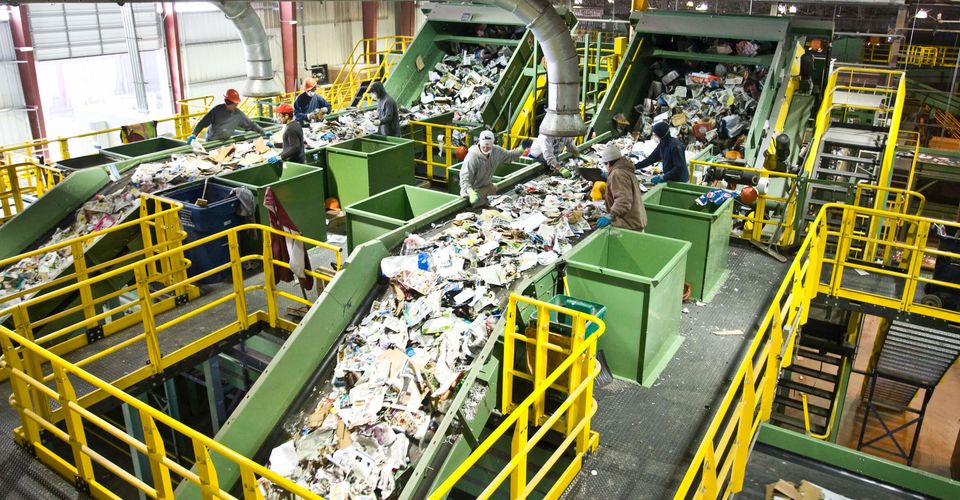

Стан та переробка відходів

Сучасний стан управління відходами в Харкові залишає бажати кращого. Проблема накопичення сміття і його переробки є однією з найбільших екологічних загроз для міста. У зв'язку зі зростанням населення і обсягів споживання, кількість відходів постійно збільшується, і система їхнього поводження потребує значних змін. У Харкові активно функціонує система збору побутових відходів, однак більшість з них потрапляє на полігони, що спричиняє забруднення ґрунтів та водних ресурсів. Зокрема, сміттєзвалища в межах міста вже давно досягли критичних розмірів, а їхнє подальше використання викликає обґрунтовану стурбованість серед місцевих жителів і екологів. Щодо переробки відходів, ситуація в Харкові все ще залишається складною. В містах є декілька заводів з переробки сміття, але їх потужності не вистачає для того, щоб задовольнити всі потреби. Водночас в місті недостатньо розвинена система сортування відходів, хоча останнім часом кілька ініціатив на кшталт встановлення контейнерів для різних видів сміття почали набувати популярності. Однак це не єдина проблема: низька обізнаність громадян щодо важливості переробки відходів та відсутність заохочувальних заходів ще більше ускладнюють ситуацію. Незважаючи на це, у Харкові реалізуються деякі програми, спрямовані на поліпшення переробки відходів, зокрема, розробляються нові способи збору та переробки сміття, а також проводяться інформаційні кампанії для підвищення рівня екологічної свідомості серед мешканців. Перспективи розвитку галузі включають впровадження новітніх технологій для зниження обсягів відходів та покращення їхнього перероблення, що дозволить не тільки зменшити навантаження на навколишнє середовище, але й створити нові робочі місця.